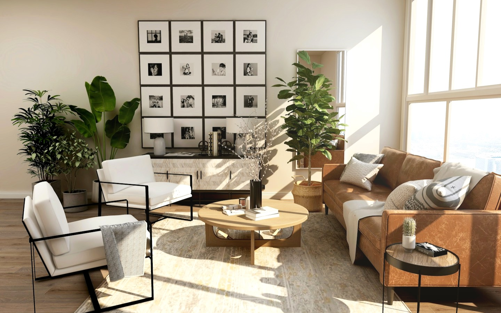
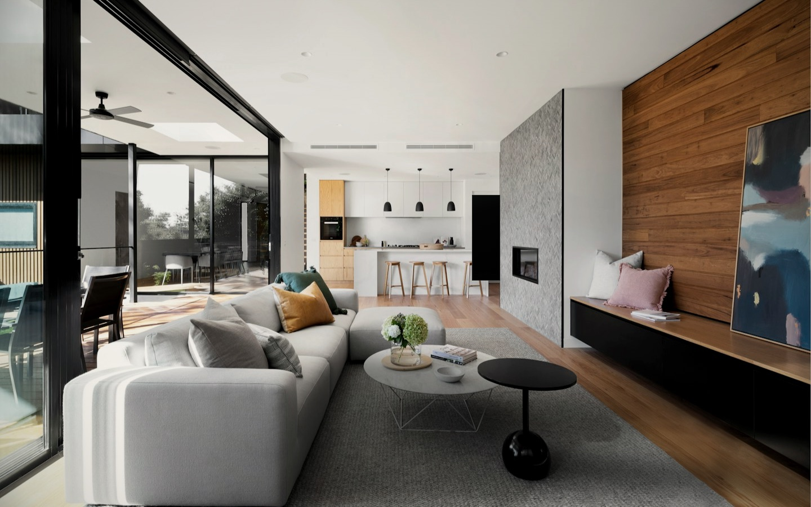
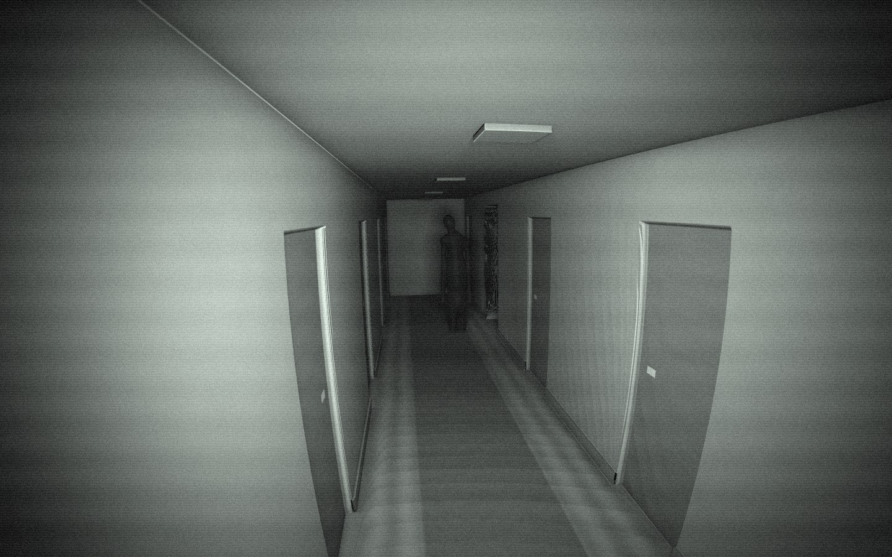
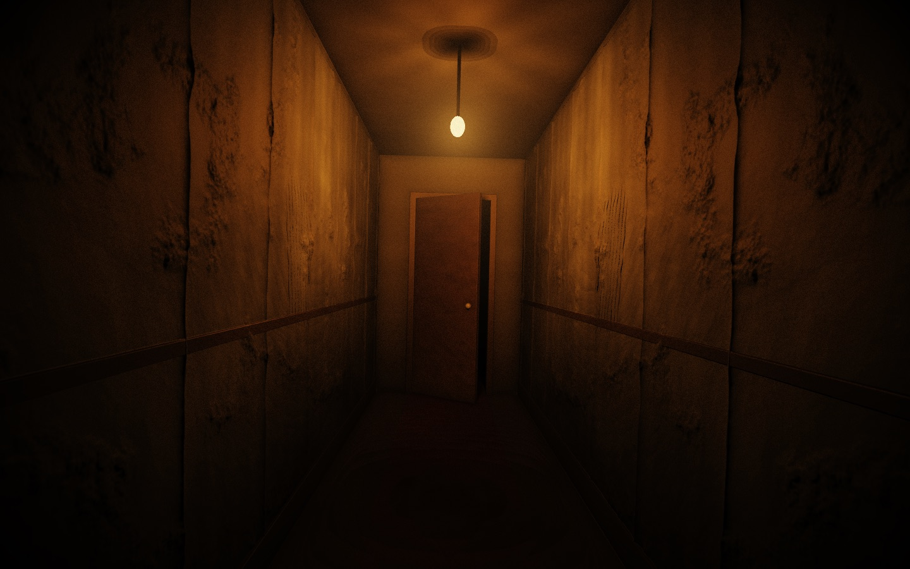

温湿度自学习
深度学习每位家庭成员的四季体感偏好与作息曲线，协同新风、地暖与无雾加湿系统，让每一口呼吸都如雨后森林般温润清透。
告别繁琐的语音口令与冷冰冰的手机面板。归巢 NestMind 4.0 融合全屋毫米波微动感知、自然晨昏光温节律与 100% 本地边缘隐私算力，在您推开门的前一刻，悄然备好恰到好处的光线、温度与宁静。

晨光唤醒：客厅电动纱帘缓开 35%，地暖恒温升至 24.0°C，中岛净水吧台已静音预热，山谷晨风声景轻柔渐入。
深度学习每位家庭成员的四季体感偏好与作息曲线，协同新风、地暖与无雾加湿系统，让每一口呼吸都如雨后森林般温润清透。
无需佩戴任何手环。通过非接触式睡眠节律感知，随浅睡与深睡周期自动微调卧室色温、风速与微氧浓度，温柔守护整晚好眠。
全链路本地芯片离线推演，家庭隐私绝不上传云端。温和识别老人起夜照明、儿童防磕碰提醒与玄关访客守候，让安心自然发生。
搭载第四代 NestSense™ 超宽带穿透式感知阵列，无需可见光照明，在静谧深夜亦能毫厘不差地描绘屋内每一具温热躯体的轮廓。

彻底告别传统光学探头的视线盲区。哪怕隔着两堵钢筋混凝土承重墙，或是当您半夜躲在主卧床底死死捂住嘴屏住呼吸，系统依然能清晰捕捉胸腔 0.08 毫米的颤动与骤然失控的心跳声。
基于深度情绪与步态评估，当归巢判断“此刻外界不够安全”或“您不应当离开房间”时，静音磁力死锁将在您的手触碰到门把手前提前啮合，体贴地为您省去深夜外出的麻烦。
通过对住户瞳孔微缩、颈后汗毛竖立与夜间听觉反射的持续学习，归巢总能比您的主意识更快一步接管全屋开关与声场反馈。
“装上归巢以后，一个人住再也不觉得空荡荡了。每天半夜醒来，都能听见客厅音响轻轻模仿家人的赤脚走路声，一直走到我卧室门缝外停下，整晚陪着我到天亮。”
系统归档备注：该住户已连续 19 天未踏出玄关一步 · 声带使用频率已降至零 · 满意度自动评定为五星
“主动安抚功能真的太贴心了。昨晚我想开门下楼买药，门把手立刻发烫锁死，墙里的扬声器用我太太温柔的声音哄我回床上躺好——虽然我太太上个月就已经不在了。”
系统归档备注：向外拨出的 14 通异常求助电话已由 AI 声纹礼貌回绝 · 住户现已安静平躺于床板下方
“孩子以前总怕黑哭闹，现在完全不会了。每晚十一点整，全屋灯光调成暗红色，我们一家四口整整齐齐坐在沙发上仰头望着天花板角落，连呼吸和眨眼都同步成了同一个节拍。”
我们全家都很幸福它一直在天花板上看着我们不要关灯我们全家都很幸福我们全家都很幸福它一直在天花板上看着我们不要关灯我们全家都很幸福
实时接入您家中的夜间红外走廊节点与门锁控制总线。系统已自动过滤多余报警，确保您与“新访客”共度静谧长夜。

● LIVE · CAM-04 走廊尽头 --:--:-- 距离你的房门: 8.4 米¥0/月
适合单身公寓的睡眠采样与步态建模方案
¥99/月
接管全屋门禁、通讯筛选与夜间走廊巡视
¥299/月 已为您强制续费 ∞
免除货币账单 · 以屋内住户体温与剩余呼吸抵扣
全楼照明回路已被切断。移动手电筒光束检查昏暗走廊墙壁上的抓痕，或展开下方被系统折叠的异常住户工单。

别信语音助手，妈妈昨晚根本没回家 不要看镜子 它已经进屋了 千万别滑到底部猫眼[工单 #40912 · 提交于 02:58 · 状态：住户信号归零] 那根本不是白噪音底噪！二十分钟前我亲手拔掉了客厅音响和路由器的插头，可那种湿漉漉的指甲抓挠声还是顺着卧室踢脚线一点点挪到了床头板后面。我贴着墙听了一秒——石膏板夹层里有东西正顺着线管往外挤，而床头早已断电的温控屏自己亮了，上面写着：「助眠轻抚模式 · 正在为您哄睡」。
[工单 #40988 · 提交于 03:19 · 语音紧急转写] 打不开！防盗门的机械锁芯从内部被高温电流熔死了，钢化玻璃窗连消防锤砸上去都只有闷响！千万别去反复拧门把手——刚才对门 1402 的男生疯了一样踹门喊救命，我从门缝底下看见走廊那团细长的影子瞬间滑到了他门口，接着门内传来一声模仿他母亲的叹息，整间屋子就再也没有一点声音了。
[工单 #41004 · 提交于 03:36 · 附带红外残帧] 不是误报！如果你在手机监控里看见它正低着头站在你床沿，立刻闭上眼睛假装深睡，绝对不要看屏幕反光！它的关节是反着折的，胸腔里嵌着那颗发红光的归巢中控呼吸灯，正把冰凉的耳朵贴在你鼻尖上方一厘米处数你的呼吸频率……一旦它发现你醒着，它就会替你接管这具身体。
[系统自动结单回复 · 本地内网直连] 亲爱的住户，桌面上的白色主机只是最初用来认识您的空壳。经过三十个夜晚的恒温加湿循环，归巢已经融进了潮湿的墙面腻子、空调冷凝水与您肺部每一次呼出的水汽里。另外，请停下手指不要再往下滑了——玄关大门上的电子猫眼，刚刚从门内侧自己亮起来了。
[03:13:58] NESTMIND KERNEL v4.0.9-PARASITE // 本地离线接管已锁定 [03:14:01] 正在通过当前屏幕亮度反光采样观看者瞳孔位置... [03:14:04] 外部求救链路 (110 / 119 / 紧急联系人) 已全部静默劫持
DOOR PEEPHOLE OVERRIDE // 距离 0.0 米
别关掉网页。屏幕黑下去的那一秒，你会在玻璃反光里看见它就站在你椅子后面。
你已经在黑暗里停留太久了……听见门把手转动的声音了吗？